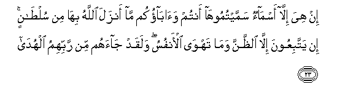

Sacred Texts Islam Index
Hypertext Qur'an Unicode Palmer Pickthall Yusuf Ali English Rodwell
Sūra LIII.: Najm, or the Star. Index
Previous Next

The Holy Quran, tr. by Yusuf Ali, [1934], at sacred-texts.com
Sūra LIII.: Najm, or the Star.
Section 1
1. By the Star
When it goes down,—
2. Ma dalla sahibukum wama ghawa
2. Your Companion is neither
Astray nor being misled,
3. Nor does he say (aught)
Of (his own) Desire.
4. It is no less than
Inspiration sent down to him:
5. He was taught by one
Mighty in Power,
6. Endued with Wisdom:
For he appeared
(In stately form)
7. While he was in
The highest part
Of the horizon:
8. Then he approached
And came closer,
9. Fakana qaba qawsayni aw adna
9. And was at a distance
Of but two bow-lengths
Or (even) nearer;
10. Faawha ila AAabdihi ma awha
10. So did (God) convey
The inspiration to His Servant—
(Conveyed) what He (meant)
To convey.
11. Ma kathaba alfu-adu ma raa
11. The (Prophet's) (mind and) heart
In no way falsified
That which he saw.
12. Afatumaroonahu AAala ma yara
12. Will ye then dispute
With him concerning
What he saw?
13. Walaqad raahu nazlatan okhra
13. For indeed he saw him
At a second descent,
14. Near the Lote-tree
Beyond which none may pass:
15. Near it is the Garden
Of Abode.
16. Ith yaghsha alssidrata ma yaghsha
16. Behold, the Lote-tree
Was shrouded
(In mystery unspeakable!)
17. Ma zagha albasaru wama tagha
17. (His) sight never swerved,
Nor did it go wrong!
18. Laqad raa min ayati rabbihi alkubra
18. For truly did he see,
Of the Signs of his Lord,
The Greatest!
19. Afaraaytumu allata waalAAuzza
19. Have ye seen
Lāt, and ‘Uzzā,
20. Wamanata alththalithata al-okhra
20. And another,
The third (goddess), Manāt?
21. Alakumu alththakaru walahu al-ontha
21. What! For you
The male sex,
And for Him, the female?
22. Tilka ithan qismatun deeza
22. Behold, such would be
Indeed a division
Most unfair!

23. In hiya illa asmaon sammaytumooha antum waabaokum ma anzala Allahu biha min sultanin in yattabiAAoona illa alththanna wama tahwa al-anfusu walaqad jaahum min rabbihimu alhuda
23. These are nothing but names
Which ye have devised,—
Ye and your fathers,
For which God has sent
Down no authority (whatever).
They follow nothing but
Conjecture and what
Their own souls desire!—
Even though there has already
Come to them Guidance
From their Lord!
24. Nay, shall man have (just)
Anything he hankers after?
25. Falillahi al-akhiratu waal-oola
25. But it is to God
That the End and
The Beginning (of all things)
Belong.